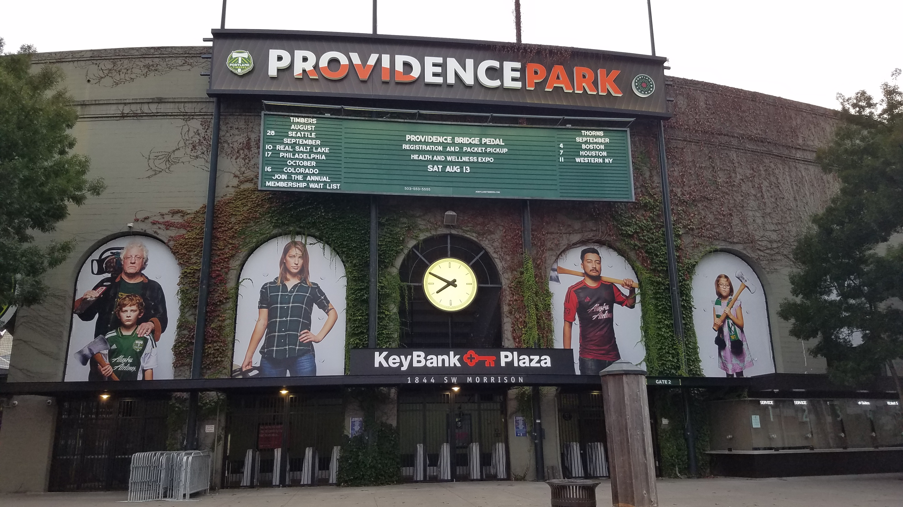

Oregon is known for its progressive ways and amazing nature. From the spectacular shores to their biggest city. Portland, Oregon's largest city, sits on the Columbia and Willamette rivers, in the shadow of snow-capped Mount Hood. It is known for its parks, bridges and bicycle paths, as well as for its eco-friendliness and its microbreweries and coffeehouses. Iconic Washington Park encompasses sites from the formal Japanese Garden to Oregon Zoo and its railway. The city hosts thriving art, theater and music scenes.

Useful tips:
Explore! Oregon state as a whole is full of some pretty spectacular nature! Portland, the states largest city, is also a really fun town full of progressive energy as well as amazing things to do!
See the coast! Oregon has some of the most beautiful shores in the country!
If you can, stay in a AirBnb. Nothing against hotels (who doesn't love hotels!) but staying in a cute and cool Airbnb somehow brings you closer to the community and culture. Usually hosts are more than willing to give you tips!
Cannabis is legal in Oregon so if you are into that sort of thing give it shot! Its known to be pretty good quality and if you are lucky enough to shop during a time of surplus you may get a great deal!
FOOD TRUCKS! Seek out all the food trucks and food truck "pods" that you can! There, you get a nice feel of what Portland is all about.
Talk to locals! As a NYC native, people can be quite nasty. Most locals I mingled with were very friendly and pretty open and cool to be honest.
Visit the Haystack Rock! While it may just be a giant rock on a beach you get some breathtaking views from different parts of the beach.
When in Portland do not hesitate to use public trans. It is known for an amazing Max Light Rail System!